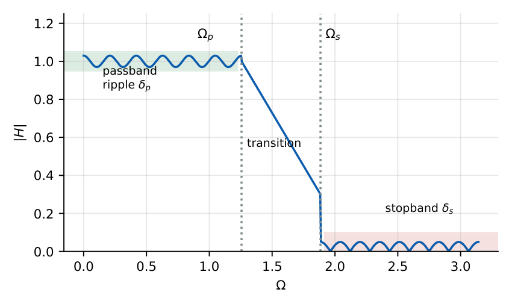
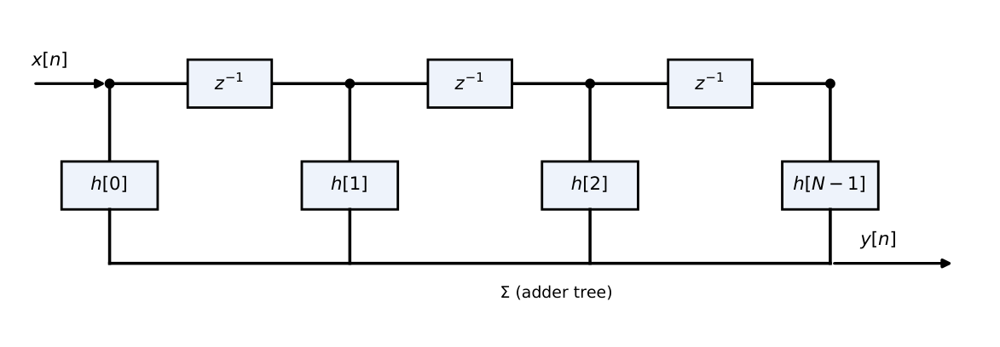
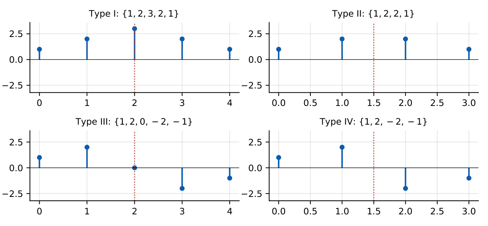
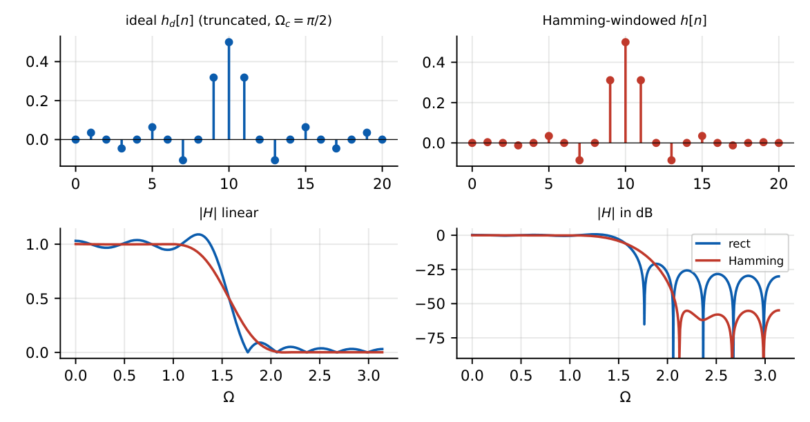
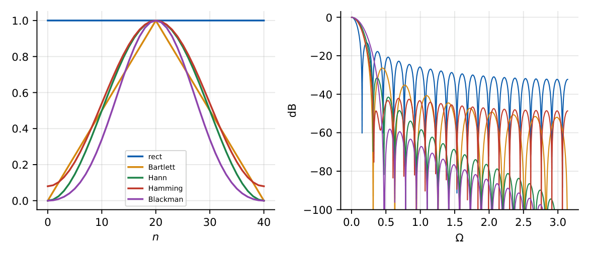

FIR Filters
In this chapter
- 26.1 Introduction to digital filters
- 26.2 FIR filter structure
- 26.3 Linear-phase FIR filters
- 26.4 FIR frequency response
- 26.5 Window method
- 26.6 Rectangular window
- 26.7 Bartlett window
- 26.8 Hann window
- 26.9 Hamming window
- 26.10 Blackman window
- 26.11 FIR filter order
- 26.12 Frequency-response specifications
- 26.13 Advantages and limitations
Linear-phase conditions and the four FIR types (which types can be high-pass?), group delay \((N-1)/2\), window properties (sidelobe level, main-lobe width), number of taps from the transition width, simple frequency-response evaluation of short FIRs.
26.1 Introduction to digital filters
A digital filter is a DT LTI system that passes some frequency bands and attenuates others. Types: low-pass (LPF), high-pass (HPF), band-pass (BPF), band-stop (BSF), all-pass. Two families: FIR (finite impulse response) and IIR (infinite impulse response).

26.2 FIR filter structure
\(y[n]=\sum_{k=0}^{N-1}h[k]x[n-k]\), \(H(z)=\sum_{k=0}^{N-1}h[k]z^{-k}\): \(N\) taps, order \(N-1\). Only zeros (plus \(N-1\) poles at the origin). Always stable; can have exactly linear phase; no feedback, so no limit cycles.

26.3 Linear-phase FIR filters
\(h[n]\) of length \(N\) has linear phase iff it is symmetric or antisymmetric about \(n=(N-1)/2\):
Symmetric: \(h[n]=h[N-1-n]\). Antisymmetric: \(h[n]=-h[N-1-n]\).
Then \(H(e^{j\Omega})=A(\Omega)\,e^{-j\Omega(N-1)/2}\) (plus a constant \(\pm\pi/2\) for antisymmetric), with \(A\) real. Group delay \(\tau_g=\dfrac{N-1}2\) samples (constant).
1.3
| Type | Symmetry, length | \(H\) at \(\Omega=0\) | \(H\) at \(\Omega=\pi\) | Suitable for |
|---|---|---|---|---|
| I | symmetric, \(N\) odd | free | free | LP, HP, BP, BS |
| II | symmetric, \(N\) even | free | \(0\) (zero at \(z=-1\)) | LP, BP (not HP) |
| III | antisymmetric, \(N\) odd | \(0\) | \(0\) | BP only (differentiator, Hilbert) |
| IV | antisymmetric, \(N\) even | \(0\) | free | HP, BP (not LP) |

- Zeros of a linear-phase filter occur in reciprocal (and conjugate) sets: \(z_0\), \(1/z_0\), \(z_0^*\), \(1/z_0^*\); zeros on the unit circle are self-reciprocal.
- Type I: \(A(\Omega)=h[M]+2\sum_{k=1}^{M}h[M-k]\cos k\Omega\), \(M=\frac{N-1}2\).
\(h=\{1,2,3,2,1\}\) (Type I): \(H(e^{j\Omega})=e^{-j2\Omega}(3+4\cos\Omega+2\cos2\Omega)\); DC gain \(9\); group delay \(2\) samples. \(h=\{1,2,1\}\): \(H=e^{-j\Omega}(2+2\cos\Omega)\): low-pass, null at \(\pi\). \(h=\{1,2,2,1\}\) (Type II): \(H(-1)=1-2+2-1=0\), delay \(1.5\) samples.
26.4 FIR frequency response
\(H(e^{j\Omega})=\sum h[k]e^{-j\Omega k}\): obtained by direct summation; for symmetric \(h\) factor the linear phase term and evaluate the cosine sum.
26.5 Window method
- Choose the ideal response \(H_d(e^{j\Omega})\) and its (infinite, non-causal) \(h_d[n]\). For a low-pass with cutoff \(\Omega_c\): \(h_d[n]=\dfrac{\sin\Omega_c(n-M)}{\pi(n-M)}\) (already delayed by \(M=\frac{N-1}2\) to make it causal).
- Truncate with a window \(w[n]\) of length \(N\): \(h[n]=h_d[n]\,w[n]\).
- Frequency response: \(H=\frac1{2\pi}H_d\circledast W\): the passband ripple and transition width follow from the window’s spectrum (main lobe \(\to\) transition width; sidelobes \(\to\) ripple/attenuation).

\(\Omega_c=\pi/2\), \(N=5\) (\(M=2\)): \(h_d=\{0,\ 0.318,\ 0.5,\ 0.318,\ 0\}\). Hamming \(w=0.54-0.46\cos\frac{2\pi n}{4}=\{0.08,0.54,1,0.54,0.08\}\): \(h=\{0,\ 0.172,\ 0.5,\ 0.172,\ 0\}\).
26.6 Rectangular window
\(w[n]=1\), \(0\le n\le N-1\). Main lobe width \(4\pi/N\); peak sidelobe \(-13\) dB; stopband attenuation \(\approx21\) dB; transition width \(\approx1.8\pi/N\). Gibbs oscillation.
26.7 Bartlett window
Triangular. Main lobe \(8\pi/N\); peak sidelobe \(-25\) dB; stopband attenuation \(\approx25\) dB.
26.8 Hann window
\(w[n]=0.5-0.5\cos\frac{2\pi n}{N-1}\). Main lobe \(8\pi/N\); sidelobe \(-31\) dB; stopband \(\approx44\) dB; transition \(\approx6.2\pi/N\).
26.9 Hamming window
\(w[n]=0.54-0.46\cos\frac{2\pi n}{N-1}\). Main lobe \(8\pi/N\); sidelobe \(-41\) dB; stopband \(\approx53\) dB; transition \(\approx6.6\pi/N\).
26.10 Blackman window
\(w[n]=0.42-0.5\cos\frac{2\pi n}{N-1}+0.08\cos\frac{4\pi n}{N-1}\). Main lobe \(12\pi/N\); sidelobe \(-57\) dB; stopband \(\approx74\) dB; transition \(\approx11\pi/N\).

| Window | Main lobe | Peak sidelobe | Min. stopband atten. | Transition width |
|---|---|---|---|---|
| Rectangular | \(4\pi/N\) | \(-13\) dB | \(21\) dB | \(1.8\pi/N\) |
| Bartlett | \(8\pi/N\) | \(-25\) dB | \(25\) dB | \(6.1\pi/N\) |
| Hann | \(8\pi/N\) | \(-31\) dB | \(44\) dB | \(6.2\pi/N\) |
| Hamming | \(8\pi/N\) | \(-41\) dB | \(53\) dB | \(6.6\pi/N\) |
| Blackman | \(12\pi/N\) | \(-57\) dB | \(74\) dB | \(11\pi/N\) |
Trade-off: better sidelobe suppression \(\Leftrightarrow\) wider main lobe \(\Leftrightarrow\) more taps for the same transition width. The stopband attenuation of a window design is set by the window, not by \(N\).
26.11 FIR filter order
\(N\approx\dfrac{c\,\pi}{\Delta\Omega}\) with \(c=1.8\) (rect), \(6.2\) (Hann), \(6.6\) (Hamming), \(11\) (Blackman). Choose \(N\) odd for Type I. Kaiser window: \(N\approx\dfrac{A_s-8}{2.285\,\Delta\Omega}\).
Transition width \(\Delta\Omega=0.1\pi\): Hamming \(N\approx66\to67\); rectangular \(N\approx18\) (but only \(21\) dB attenuation). For \(\Delta\Omega=0.2\pi\), Hamming: \(N\approx33\).
26.12 Frequency-response specifications
Specify \(\Omega_p\), \(\Omega_s\), passband ripple \(\alpha_p\) (dB) and minimum stopband attenuation \(\alpha_s\) (dB). Windows fix \(\alpha_s\); e.g. \(\alpha_s=40\) dB \(\Rightarrow\) Hann or Hamming; \(\alpha_s=70\) dB \(\Rightarrow\) Blackman.
26.13 Advantages and limitations
| FIR advantages | FIR limitations |
|---|---|
| Always stable; exact linear phase possible; simple, no feedback quantisation problems | Needs many more taps than IIR for the same sharpness; larger delay \((N-1)/2\) and cost |
Q1. An FIR filter has exactly linear phase if its impulse response is (A) causal (B) symmetric or antisymmetric (C) real (D) of even length only.
Q2. The group delay of a linear-phase FIR of length \(N\) is (A) \(N\) (B) \((N-1)/2\) (C) \(N/2\) (D) \(N-1\).
Q3. Which window gives the best stopband attenuation? (A) rectangular (B) Bartlett (C) Hamming (D) Blackman.
Answers: Q1 (B). Q2 (B). Q3 (D).
Q4. \(h=\{1,2,3,2,1\}\): the group delay (samples) and DC gain are (A) \(2\), \(9\) (B) \(2.5\), \(9\) (C) \(2\), \(3\) (D) \(4\), \(9\).
Q5. A length-\(8\) symmetric FIR filter cannot realise a (A) low-pass (B) high-pass (C) band-pass (D) band-stop with zero at \(\pi\).
Answers: Q4 (A). Q5 (B): Type II has a zero at \(z=-1\).
Q6. A Hamming-window low-pass FIR filter with transition width \(0.2\pi\) needs about taps.
Q7. \(h=\{1,2,3,2,1\}\): \(H(e^{j\Omega})\) at \(\Omega=0\) is .
Answers: Q6: \(6.6\pi/0.2\pi=33\). Q7: \(9\).
Q8. Which are true? (A) FIR filters are always stable. (B) Type III filters have zeros at \(z=\pm1\). (C) Rectangular window has the narrowest main lobe. (D) Hamming has better sidelobe attenuation than Hann.
Answers: Q8: all four.
(i) Length \(N\) vs order \(N-1\). (ii) Group delay \((N-1)/2\) is not always an integer (Type II/IV). (iii) Window main-lobe widths are quoted for the whole lobe (\(4\pi/N\) null-to-null). (iv) Stopband attenuation of the design is fixed by the window: increasing \(N\) only narrows the transition.
T1. Type of \(h=\{1,-1\}\)? T2. Which type can implement a Hilbert transformer/differentiator?
Answers: T1: even length antisymmetric: Type IV (high-pass). T2: Type III (odd length, antisymmetric) or IV.
- Linear phase \(\Leftrightarrow h[n]=\pm h[N-1-n]\); \(\tau_g=(N-1)/2\). Types I–IV: II has zero at \(-1\); III at \(\pm1\); IV at \(1\).
- Window design: \(h=h_dw\); ideal LP \(h_d=\frac{\sin\Omega_c(n-M)}{\pi(n-M)}\).
- Windows: Rect \(-13\)/21 dB, Bartlett \(-25\), Hann \(-31\)/44, Hamming \(-41\)/53, Blackman \(-57\)/74; \(N\approx c\pi/\Delta\Omega\) with \(c=1.8,6.2,6.6,11\).